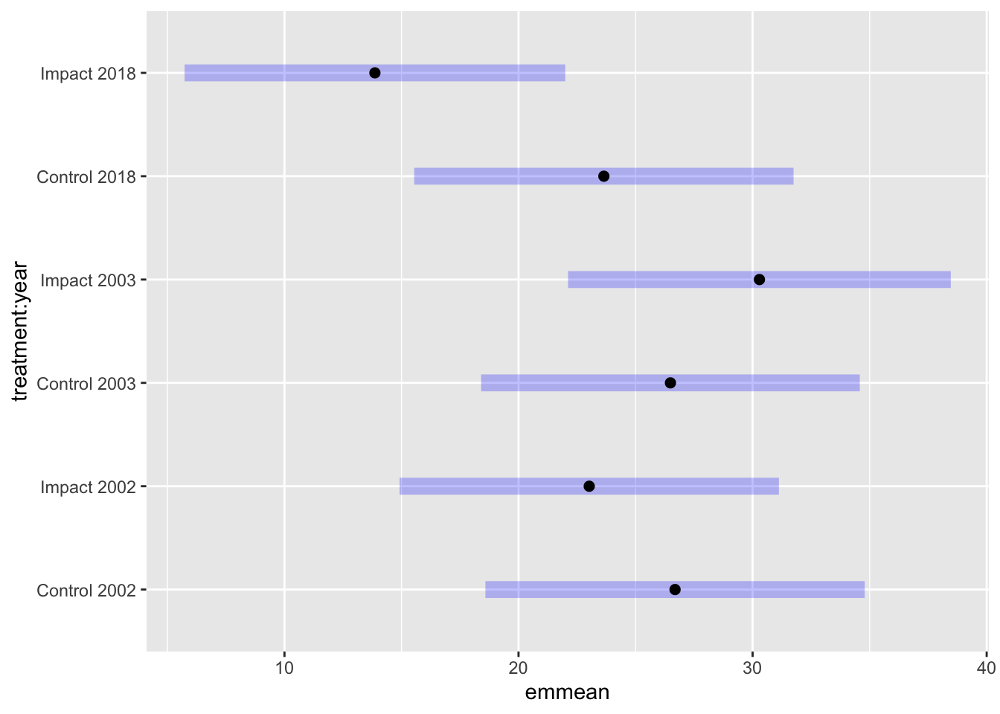
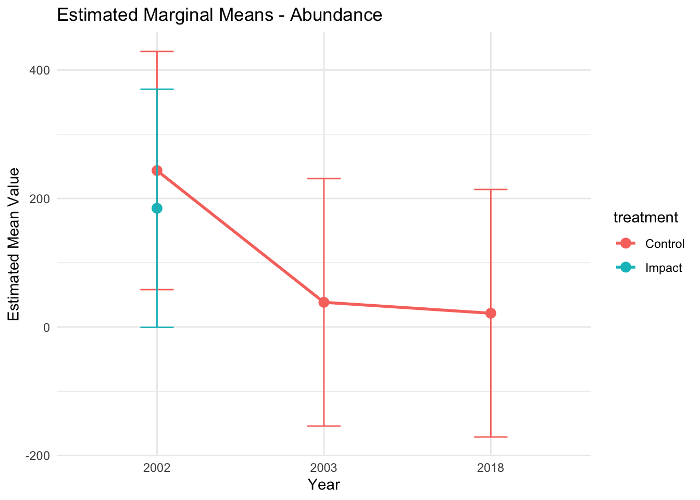

Clean data set by correcting spelling for Stag’s Leap and Wappo Hill preserving a subset of the columns, removing sites that were not sampled in all years and changing start_date to a date class and remove sample from 2001
Check that numbers of bees per site agree after spelling correction and other modifications.
genus_name species site start_date type year number
1 Andrena sp. 6 Goode 2002-03-26 Male 2002 1
2 Nomada sp. 3 Goode 2002-03-26 Female 2002 1
3 Nomada sp. 10 Goode 2002-03-26 Female 2002 1
4 Eucera frater Goode 2002-03-26 Male 2002 1
5 Andrena caerulea Goode 2002-03-26 Male 2002 1
6 Andrena caerulea Goode 2002-03-26 Male 2002 1
#create new variable that combines the genus and species namebee_data_clean$combined_name <-paste(bee_data_clean$genus_name,bee_data_clean$species, sep=" ")#Check that samples are still correctbee_data_clean %>%group_by(site) %>%summarize(count_bees =sum(number))
Analyze the data using the lmer() function to fit a linear mixed-effects model where:
no_spp is the response variable.
treatment and year are fixed effects, and their interaction is included to assess the BACI impact.
sampling_events is included as a covariate.
(1 | site) indicates that Site is a random effect to account for variability among sites.
# Convert Year to a factor for categorical analysissites_summary$year <-factor(sites_summary$year)# Fit a mixed-effects modelmodel_sprich <-lmer(no_spp ~ year * treatment + sampling_events + (1| site), data = sites_summary)# Summary of the modelsummary(model_sprich)
Linear mixed model fit by REML. t-tests use Satterthwaite's method [
lmerModLmerTest]
Formula: no_spp ~ year * treatment + sampling_events + (1 | site)
Data: sites_summary
REML criterion at convergence: 93.2
Scaled residuals:
Min 1Q Median 3Q Max
-1.52971 -0.28483 0.06133 0.54132 1.17052
Random effects:
Groups Name Variance Std.Dev.
site (Intercept) 17.58 4.193
Residual 11.94 3.455
Number of obs: 21, groups: site, 7
Fixed effects:
Estimate Std. Error df t value Pr(>|t|)
(Intercept) -5.68436 8.20409 13.98869 -0.693 0.499734
year2003 0.04951 2.93543 9.42783 0.017 0.986894
year2018 -2.71176 3.02157 9.71838 -0.897 0.391160
treatmentImpact -3.44032 4.14978 7.97069 -0.829 0.431209
sampling_events 3.71618 0.81223 13.81527 4.575 0.000447 ***
year2003:treatmentImpact 6.13285 3.81897 9.25439 1.606 0.141832
year2018:treatmentImpact -5.07538 4.09734 9.95645 -1.239 0.243864
---
Signif. codes: 0 '***' 0.001 '**' 0.01 '*' 0.05 '.' 0.1 ' ' 1
Correlation of Fixed Effects:
(Intr) yr2003 yr2018 trtmnI smpln_ y2003:
year2003 -0.421
year2018 -0.492 0.548
trtmntImpct -0.304 0.331 0.323
smplng_vnts -0.924 0.277 0.358 0.016
yr2003:trtI -0.070 -0.651 -0.269 -0.436 0.213
yr2018:trtI 0.500 -0.445 -0.791 -0.416 -0.413 0.357
# Plot residuals for diagnostic checkingpar(mfrow =c(2, 2))plot(resid(model_sprich), main ="Residuals-Species richness")hist(resid(model_sprich), main ="Histogram of Residuals", xlab ="Residuals")qqnorm(resid(model_sprich))qqline(resid(model_sprich), col ="red")# Here we plot the estimated means for each group for species richnessemm_sprich <-emmeans(model_sprich, ~ year * treatment)
Cannot use mode = "kenward-roger" because *pbkrtest* package is not installed
plot(emm_sprich)pairs(emm_sprich)
contrast estimate SE df t.ratio p.value
year2002 Control - year2003 Control -0.0495 2.94 9.43 -0.017 1.0000
year2002 Control - year2018 Control 2.7118 3.02 9.72 0.897 0.9384
year2002 Control - year2002 Impact 3.4403 4.15 7.97 0.829 0.9534
year2002 Control - year2003 Impact -2.7420 4.48 9.14 -0.612 0.9873
year2002 Control - year2018 Impact 11.2275 4.18 8.10 2.683 0.1800
year2003 Control - year2018 Control 2.7613 2.83 9.06 0.974 0.9152
year2003 Control - year2002 Impact 3.4898 4.22 8.21 0.828 0.9539
year2003 Control - year2003 Impact -2.6925 4.24 8.31 -0.635 0.9848
year2003 Control - year2018 Impact 11.2770 4.36 8.75 2.584 0.1983
year2018 Control - year2002 Impact 0.7286 4.27 8.42 0.171 1.0000
year2018 Control - year2003 Impact -5.4538 4.19 8.13 -1.300 0.7781
year2018 Control - year2018 Impact 8.5157 4.46 9.05 1.911 0.4523
year2002 Impact - year2003 Impact -6.1824 2.93 10.73 -2.107 0.3509
year2002 Impact - year2018 Impact 7.7871 2.52 9.33 3.093 0.0938
year2003 Impact - year2018 Impact 13.9695 3.31 11.57 4.220 0.0125
Degrees-of-freedom method: satterthwaite
P value adjustment: tukey method for comparing a family of 6 estimates
# Convert to data frame for ggplotemm_sprich_df <-as.data.frame(emm_sprich)# Plot the resultsplot_spprich <-ggplot(emm_sprich_df, aes(x = year, y = emmean, color = treatment)) +geom_point(size =3) +geom_line(aes(group = treatment), size =1) +geom_errorbar(aes(ymin = lower.CL, ymax = upper.CL), width =0.2) +labs(title ="Estimated Marginal Means - Species richness",x ="Year",y ="Estimated Mean Value",color ="treatment") +theme_minimal()
Warning: Using `size` aesthetic for lines was deprecated in ggplot2 3.4.0.
ℹ Please use `linewidth` instead.
plot_spprich

Analyze the abundance in the same way.
# Response variable abundance# Fit a mixed-effects modelmodel_abund <-lmer(abund ~ year * treatment + sampling_events + (1| site), data = sites_summary)
boundary (singular) fit: see help('isSingular')
# Summary of the modelsummary(model_abund)
Linear mixed model fit by REML. t-tests use Satterthwaite's method [
lmerModLmerTest]
Formula: abund ~ year * treatment + sampling_events + (1 | site)
Data: sites_summary
REML criterion at convergence: 182.5
Scaled residuals:
Min 1Q Median 3Q Max
-1.6025 -0.3620 -0.1107 0.2752 2.7238
Random effects:
Groups Name Variance Std.Dev.
site (Intercept) 0 0.0
Residual 12117 110.1
Number of obs: 21, groups: site, 7
Fixed effects:
Estimate Std. Error df t value Pr(>|t|)
(Intercept) -68.381 172.885 14.000 -0.396 0.6984
year2003 -117.412 91.515 14.000 -1.283 0.2203
year2018 -187.327 92.767 14.000 -2.019 0.0630 .
treatmentImpact -84.979 84.086 14.000 -1.011 0.3293
sampling_events 45.255 17.226 14.000 2.627 0.0199 *
year2003:treatmentImpact 61.172 120.140 14.000 0.509 0.6186
year2018:treatmentImpact -7.865 124.196 14.000 -0.063 0.9504
---
Signif. codes: 0 '***' 0.001 '**' 0.01 '*' 0.05 '.' 0.1 ' ' 1
Correlation of Fixed Effects:
(Intr) yr2003 yr2018 trtmnI smpln_ y2003:
year2003 -0.430
year2018 -0.482 0.522
trtmntImpct -0.294 0.528 0.522
smplng_vnts -0.930 0.188 0.248 0.017
yr2003:trtI 0.061 -0.708 -0.327 -0.697 0.143
yr2018:trtI 0.457 -0.410 -0.773 -0.682 -0.289 0.432
optimizer (nloptwrap) convergence code: 0 (OK)
boundary (singular) fit: see help('isSingular')
# Plot residuals for diagnostic checkingpar(mfrow =c(2, 2))plot(resid(model_abund), main ="Residuals-Abundance")hist(resid(model_abund), main ="Histogram of Residuals", xlab ="Residuals")qqnorm(resid(model_abund))qqline(resid(model_abund), col ="red")# Here we plot the estimated means for each group for abundanceemm_abund <-emmeans(model_abund, ~ year * treatment)
Cannot use mode = "kenward-roger" because *pbkrtest* package is not installed
#pairs(emm_abund)# Convert to data frame for ggplotemm_abund_df <-as.data.frame(emm_abund)# Plot the resultsplot_abund <-ggplot(emm_abund_df, aes(x = year, y = emmean, color = treatment)) +geom_point(size =3) +geom_line(aes(group = treatment), size =1) +geom_errorbar(aes(ymin = lower.CL, ymax = upper.CL), width =0.2) +labs(title ="Estimated Marginal Means - Abundance",x ="Year",y ="Estimated Mean Value",color ="treatment") +theme_minimal()plot_abund

###Analyze species richness using a poisson regression
## Poisson regression model# Convert Year and treatment to factorssites_summary$treatment <-factor(sites_summary$treatment)# Fit a Poisson regression modelpoisson_model <-glmer(no_spp ~ treatment * year + sampling_events + (1| site), data = sites_summary, family =poisson(link ="log"))
Warning in checkConv(attr(opt, "derivs"), opt$par, ctrl = control$checkConv, :
Model failed to converge with max|grad| = 0.00252601 (tol = 0.002, component 1)
# Summary of the modelsummary(poisson_model)
Generalized linear mixed model fit by maximum likelihood (Laplace
Approximation) [glmerMod]
Family: poisson ( log )
Formula: no_spp ~ treatment * year + sampling_events + (1 | site)
Data: sites_summary
AIC BIC logLik deviance df.resid
135.3 143.6 -59.6 119.3 13
Scaled residuals:
Min 1Q Median 3Q Max
-1.5547 -0.3438 0.1022 0.4943 1.1287
Random effects:
Groups Name Variance Std.Dev.
site (Intercept) 0.008087 0.08993
Number of obs: 21, groups: site, 7
Fixed effects:
Estimate Std. Error z value Pr(>|z|)
(Intercept) 2.04552 0.40995 4.990 6.05e-07 ***
treatmentImpact -0.10792 0.16352 -0.660 0.509257
year2003 0.03707 0.16745 0.221 0.824817
year2018 -0.13199 0.17226 -0.766 0.443540
sampling_events 0.13748 0.04013 3.426 0.000612 ***
treatmentImpact:year2003 0.20397 0.21510 0.948 0.342995
treatmentImpact:year2018 -0.18564 0.23578 -0.787 0.431090
---
Signif. codes: 0 '***' 0.001 '**' 0.01 '*' 0.05 '.' 0.1 ' ' 1
Correlation of Fixed Effects:
(Intr) trtmnI yr2003 yr2018 smpln_ tI:200
trtmntImpct -0.290
year2003 -0.496 0.455
year2018 -0.442 0.434 0.499
smplng_vnts -0.956 0.077 0.340 0.291
trtmnI:2003 -0.004 -0.609 -0.641 -0.271 0.143
trtmnI:2018 0.436 -0.586 -0.406 -0.766 -0.330 0.379
optimizer (Nelder_Mead) convergence code: 0 (OK)
Model failed to converge with max|grad| = 0.00252601 (tol = 0.002, component 1)
# Check for overdispersionoverdispersion_test <-sum(residuals(poisson_model, type ="pearson")^2) /df.residual(poisson_model)print(paste("Overdispersion ratio of poisson:", overdispersion_test))
[1] "Overdispersion ratio of poisson: 0.651275170498879"
# Fit a negative binomial modelnb_model <-glm.nb(no_spp ~ treatment * year + sampling_events, data = sites_summary)
# Check for overdispersionoverdispersion_test <-sum(residuals(nb_model, type ="pearson")^2) /df.residual(nb_model)print(paste("Overdispersion ratio:", overdispersion_test))
[1] "Overdispersion ratio: 1.0799122072605"
Poisson model of abundance
## Poisson regression model# Convert Year and treatment to factorssites_summary$treatment <-factor(sites_summary$treatment)# Fit a Poisson regression modelpoisson_model <-glmer(abund ~ treatment * year + sampling_events + (1| site), data = sites_summary, family =poisson(link ="log"))# Summary of the modelsummary(poisson_model)
Generalized linear mixed model fit by maximum likelihood (Laplace
Approximation) [glmerMod]
Family: poisson ( log )
Formula: abund ~ treatment * year + sampling_events + (1 | site)
Data: sites_summary
AIC BIC logLik deviance df.resid
436.3 444.7 -210.2 420.3 13
Scaled residuals:
Min 1Q Median 3Q Max
-5.0838 -2.1265 -0.8044 3.2059 5.7699
Random effects:
Groups Name Variance Std.Dev.
site (Intercept) 0.07291 0.27
Number of obs: 21, groups: site, 7
Fixed effects:
Estimate Std. Error z value Pr(>|z|)
(Intercept) 3.88942 0.26846 14.488 < 2e-16 ***
treatmentImpact -0.14215 0.21139 -0.672 0.501
year2003 -0.35711 0.05980 -5.972 2.34e-09 ***
year2018 -1.03418 0.06668 -15.510 < 2e-16 ***
sampling_events 0.19356 0.02277 8.503 < 2e-16 ***
treatmentImpact:year2003 -0.02797 0.07860 -0.356 0.722
treatmentImpact:year2018 -0.04631 0.09392 -0.493 0.622
---
Signif. codes: 0 '***' 0.001 '**' 0.01 '*' 0.05 '.' 0.1 ' ' 1
Correlation of Fixed Effects:
(Intr) trtmnI yr2003 yr2018 smpln_ tI:200
trtmntImpct -0.458
year2003 -0.456 0.085
year2018 -0.277 0.068 0.376
smplng_vnts -0.804 0.012 0.490 0.282
trtmnI:2003 -0.153 -0.116 -0.456 -0.111 0.249
trtmnI:2018 0.351 -0.099 -0.361 -0.764 -0.391 0.162
# Check for overdispersionoverdispersion_test <-sum(residuals(poisson_model, type ="pearson")^2) /df.residual(poisson_model)print(paste("Overdispersion ratio of poisson:", overdispersion_test))
[1] "Overdispersion ratio of poisson: 18.7345367488593"
Negative binomial model of abundance.
# Fit a negative binomial modelnb_model <-glm.nb(no_spp ~ treatment * year + sampling_events, data = sites_summary)
# Check for overdispersionoverdispersion_test <-sum(residuals(nb_model, type ="pearson")^2) /df.residual(nb_model)print(paste("Overdispersion ratio:", overdispersion_test))